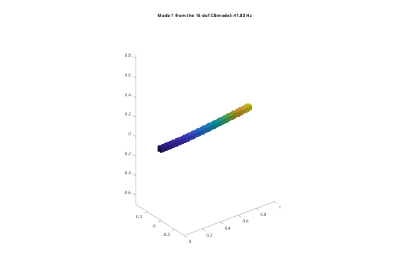
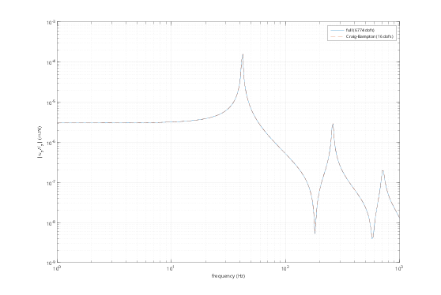

Contents
Tutorial 10 - Model reduction: Guyan and Craig-Bampton
Craig-Bampton reduction keeps some boundary dofs (interfaces, actuators, sensors) as physical coordinates, and represents the rest of the structure by a few fixed-interface modes. The result is a small, accurate model for control design, multibody simulation, or coupling to other models. This tutorial covers:
- Guyan (static) reduction
- Craig-Bampton accuracy vs the number of modes
- recovering the full displacement field
- state-space models from the reduced matrices
addpath(fileparts(fileparts(mfilename('fullpath')))); out = fullfile(tempdir, 'femTutorials'); if ~isfolder(out), mkdir(out); end fembd.boxSTL(fullfile(out, 'beam.stl'), [0 0 0], [1000 50 50]); beam = fembd.Body(fullfile(out, 'beam.stl'), fembd.material(210e9, 0.3, 7850), ... Size = 25, Scale = 1e-3);
1. Boundary dofs
A coupling on the tip face gives the beam an interface with 6 dofs, like a flange. Its reference dofs, mapped into q, are the boundary.
a = fembd.Assembly(); a.add(beam); a.fix('beam', @(X) X(:,1) < 1e-9); tip = a.couple('beam', @(X) X(:,1) > 1 - 1e-9, Name = 'tip'); [K, M, T] = a.system(); ib = a.qdof(a.dof('tip')); % [ux uy uz rx ry rz] of the tip [~, f] = fembd.modes(K, M, 8); fprintf('full model: %d dofs\n', size(K, 1));
full model: 6774 dofs
2. Guyan reduction
n = 0 keeps only the boundary dofs. The rest of the structure follows statically (constraint modes). The static response at the boundary is exact, but frequencies are overestimated because the interior inertia is only approximated.
[Kg, Mg, Vg] = fembd.craigBampton(K, M, ib, 0); b = zeros(size(K, 1), 1); b(ib(3)) = 1; % 1 N in z at the tip bg = Vg'*b; % load in reduced coordinates fprintf('static tip deflection: full %.6e m, Guyan %.6e m\n', b'*(K\b), bg'*(Kg\bg)); % The frequency errors of Guyan reduction are in the n = 0 column below.
static tip deflection: full 3.038926e-06 m, Guyan 3.038926e-06 m
3. Craig-Bampton: accuracy vs number of modes
Adding n fixed-interface modes (eta) makes the low frequencies converge quickly. The reduced coordinates are x = [u_b; eta], and q ~ Vc*x.
nModes = [0 2 5 10]; err = zeros(4, numel(nModes)); for k = 1:numel(nModes) [Kc, Mc] = fembd.craigBampton(K, M, ib, nModes(k)); [~, fc] = fembd.modes(Kc, Mc, 4); err(:,k) = 100*(fc./f(1:4) - 1); end disp(array2table(err, 'VariableNames', compose('n=%d', nModes), ... 'RowNames', compose('mode %d error %%', 1:4)));
n=0 n=2 n=5 n=10
_______ ________ _________ __________
mode 1 error % 0.48772 0.038032 0.0021781 0.00079944
mode 2 error % 0.48712 0.037938 0.006821 0.00079574
mode 3 error % 58.151 0.45466 0.047034 0.020668
mode 4 error % 58.119 0.45249 0.12859 0.020548
4. Recovering the full field
A reduced solution x maps back to the full displacements: u = T*Vc*x.
[Kc, Mc, Vc] = fembd.craigBampton(K, M, ib, 10); [Xc, fc] = fembd.modes(Kc, Mc, 1); u = T*Vc*Xc(:,1); figure('Color', 'w'); a.plot(u, 0.1/max(abs(u(1:3*size(a.X, 1))))); title(sprintf('Mode 1 from the %d-dof CB model: %.2f Hz', size(Kc, 1), fc));

5. State space of the reduced model
The reduced matrices are small and dense, so the standard first-order form is fine. Input: z force at the tip; output: z displacement there.
nr = size(Kc, 1); Dc = 1e-5*Kc; % stiffness-proportional damping A = [zeros(nr), eye(nr); -Mc\Kc, -Mc\Dc]; B = [zeros(nr, 1); Mc\((1:nr)' == 3)]; C = [(1:nr) == 3, zeros(1, nr)]; fHz = logspace(0, 3, 300); H = arrayfun(@(w) C*((2i*pi*w*eye(2*nr) - A)\B), fHz); Hf = arrayfun(@(w) b'*((K + 2i*pi*w*1e-5*K - (2*pi*w)^2*M)\b), fHz); figure('Color', 'w'); loglog(fHz, abs(Hf), fHz, abs(H), '--'); grid on xlabel('frequency (Hz)'); ylabel('|u_z/F_z| (m/N)'); legend(sprintf('full (%d dofs)', size(K, 1)), sprintf('Craig-Bampton (%d dofs)', nr)); % With the Control System Toolbox: sys = ss(A, B, C, 0); bode(sys)
